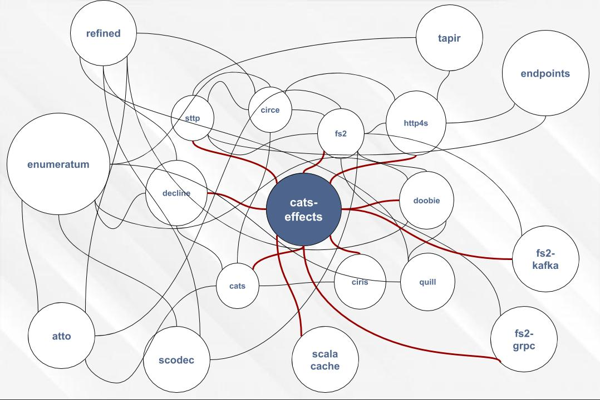

case class Note(title: String, text: String)
def save(note: Note): IO[Unit]
def getAll(): IO[List[Note]]
createNote
POST /notes
getAllNotes
GET /notes
Note
{ "title": "my title", "text": "my text"}
|
|
HttpRequest => HttpResponse
type HttpRoutes[F[_]] = HttpRequest[F] => F[Option[HttpResponse[F]]]
type HttpRoutes[F[_]] = Kleisli[OptionT[F, ?], Request[F], Response[F]]
trait NotesController[F[_]] {
def saveNote: HttpRoutes[F]
def getNotes: HttpRoutes[F]
}
class DummyNotesController[F[_]: Sync] extends NotesController[F] {
val dsl = Http4sDsl[F]
import dsl._
override def saveNote = HttpRoutes.of[F] {
case POST -> Root / "notes" => Ok("Hello")
}
override def getNotes = HttpRoutes.of[F] {
case GET -> Root / "notes" => Ok("World")
}
}
def startApp[F[_]: ConcurrentEffect: Timer]
(controller: NotesController[F]): F[ExitCode] = {
val services = controller.getNotes <+> controller.saveNote
val httpApp = Router("/" -> services).orNotFound
val serverBuilder = BlazeServerBuilder[F]
.bindHttp(8080, "localhost")
.withHttpApp(httpApp)
serverBuilder.serve.compile.drain
.as(ExitCode.Success)
}
|
|
import io.circe._
val json: Either[ParsingFailure, Json] = parser.parse("{}")
val data: Either[DecodingFailure, Note] = json.right.get.as[Note]
import io.circe.generic.JsonCodec
@JsonCodec
case class Note(title: String, text: String)
import org.http4s.circe.CirceEntityDecoder._
import org.http4s.circe.CirceEntityEncoder._
override def saveNote: HttpRoutes[F] = HttpRoutes.of[F] {
case req @ POST -> Root / "notes" =>
for {
note <- req.as[Note]
resp <- Ok(s"Saved")
} yield resp
}
override def getNotes: _root_.org.http4s.HttpRoutes[F] = HttpRoutes.of[F] {
case GET -> Root / "notes" =>
for {
resp <- Ok(List(Note("title", "text")))
} yield resp
}
|
|
trait NotesRepository[F[_]] {
def initialize(): F[Unit]
def save(note: Note): F[Unit]
def getAll(): F[List[Note]]
}
class DoobieNotesRepository[F[_]: Bracket[?[_], Throwable]](xa: Transactor[F]) extends NotesRepository[F] {
import doobie.implicits._
import cats.syntax.all._
def initialize(): F[Unit] = {
val q = sql"create table if not exists notes_v1 ( title VARCHAR, text VARCHAR)".update
q.run.transact(xa).as(())
}
override def save(note: Note): F[Unit] = {
val q = sql"insert into notes_v1 (title, text) values (${note.title}, ${note.text})".update
q.run.transact(xa).as(())
}
override def getAll(): F[List[Note]] = {
val q = sql"select title, text from notes_v1".query[Note]
q.to[List].transact(xa)
}
}
import io.getquill._
val ctx = new SqlMirrorContext(MirrorSqlDialect, Literal)
import ctx._
case class Point(x: Int, y: Int)
val q = quote {
query[Point].filter(p => p.x > 10)
}
ctx.run(q)
// select x, y from point where x > 10
class QuillNotesRepository[F[_]: Bracket[?[_], Throwable]]
(xa: Transactor[F], ctx: DoobieContext.H2[SnakeCase.type])
extends NotesRepository[F] {
import ctx._
private implicit val notesSchemaMeta = schemaMeta[Note]("notes_v1")
def initialize(): F[Unit] = {
val q = sql"create table if not exists notes_v1 ( title VARCHAR, text VARCHAR)".update
q.run.transact(xa).as(())
}
override def save(note: Note): F[Unit] = {
val q = quote { query[Note].insert(lift(note)) }
run(q).transact(xa).as(())
}
override def getAll(): F[List[Note]] = {
val q = quote { query[Note] }
run(q).transact(xa)
}
}
import doobie.postgres.circe.json.implicits._
sql"select '{}' :: json".query[Json]
sql"select ${Json.obj()} :: json".query[Json]
class DoobieNotesRepository[...](xa: Transactor[F])
class QuillNotesRepository[...](xa: Transactor[F], ctx: DoobieContext.H2[SnakeCase.type])
Transactor.fromDriverManager[IO](
driver = "org.h2.Driver",
url = "jdbc:h2:mem:MyDatabase;DB_CLOSE_DELAY=-1",
)
|
|
val port: ConfigValue[Int] =
env("MAGIC_API_PORT")
.or(prop("magic.api.port"))
.as[Int]
.default(8080)
case class Api(address: String, port: Int)
val address: ConfigValue[String] = ???
val apiConfig: ConfigValue[Api] =
(address, port).parMapN(Api)
val config: IO[Api] = apiConfig.load[IO]
def getNotes(): F[List[Note]]
|
|
val converter: Stream[IO, Unit] =
fs2.io.file.readAll[IO](Paths.get("testdata/fahrenheit.txt"), blocker, 4096)
.through(text.utf8Decode)
.through(text.lines)
.filter(s => !s.trim.isEmpty && !s.startsWith("//"))
.map(line => fahrenheitToCelsius(line.toDouble).toString)
.intersperse("\n")
.through(text.utf8Encode)
.through(io.file.writeAll(Paths.get("testdata/celsius.txt"), blocker))
trait StreamingNotesRepository[F[_]] {
def getAllStream(): fs2.Stream[F, Note]
}
import ctx._
def getAllStream(): fs2.Stream[F, Note] = {
stream(query[Note]).transact(xa)
}
override def getNotes: HttpRoutes[F] = HttpRoutes.of[F] {
case GET -> Root / "notes" =>
val notes: fs2.Stream[F, Note] = repository.getAll()
Ok(notes)
}
|
|
magic get-notes --url localhost --port 8080
magic add-note --title my --text note
magic --help
sealed trait MyCommand
object MyCommand {
case class GetNotes(url: String, port: Int) extends MyCommand
case class AddNote(url: String, port: Int, note: Note) extends MyCommand
}
Opt
val urlOpt: Opts[String] = Opts
.option[String]("url", help = "Server url")
.orElse(Opts.env[String]("MAGIC_URL", "Server url"))
.withDefault("localhost")
Opts together
val urlOpt: Opts[String] = ???
val portOpt: Opts[Int] = ???
val noteOpt: Opts[Note] = {
val titleOpt: Opts[String] = ???
val textOpt: Opts[String] = ???
(titleOpt, textOpt).mapN(Note)
}
val addNoteCmdOpt: Opts[MyCommand] = Opts
.subcommand[MyCommand]("add-note", "Add note")(
(urlOpt, portOpt, noteOpt).mapN(Command.AddNote)
)
val getNotesCmdOpt: Opts[MyCommand] = ???
getNotesCmdOpt orElse addNoteCmdOpt
|
|
|
Usage:
magic get-notes
magic add-note
Notes manager
Options and flags:
--help
Display this help text.
Subcommands:
get-notes
Get notes
add-note
Add note
|
|
trait ApiClient[F[_]] {
def addNote(note: Note): F[Unit]
def getNotes(): F[List[Note]]
}
trait SttpBackend[R[_], -S] {
def send[T](request: Request[T, S]): R[Response[T]]
}
override def addNote(note: Note): F[Unit] = {
import com.softwaremill.sttp.circe._
sttp
.post(uri"$url/notes")
.body(note)
.send()
.map(_.body.leftMap(new RuntimeException(_)))
.rethrow
.as(())
}
implicit val backend: SttpBackend[IO, fs2.Stream[IO, ByteBuffer]] =
AsyncHttpClientFs2Backend[IO]()
override def getNotesStream(): fs2.Stream[F, Note] = {
val response: F[fs2.Stream[F, ByteBuffer]] = sttp
.get(uri"$url/notes")
.response(asStream[fs2.Stream[F, ByteBuffer]])
.send()
...
}
override def getNotesStream(): fs2.Stream[F, Note] = {
...
fs2.Stream
.eval(response)
.flatten
.flatMap(b => fs2.Stream.emits(b.array()))
.through(io.circe.fs2.byteStreamParser[F])
.map(_.as[Note])
.rethrow
}
implicit val backend: SttpBackend[Id, Nothing] =
HttpURLConnectionBackend()
val response: Response[String] = request.send()
F[_]!
val ip: Parser[IP] =
for {
a <- ubyte
_ <- char('.')
b <- ubyte
_ <- char('.')
c <- ubyte
_ <- char('.')
d <- ubyte
} yield IP(a, b, c, d)
myCharsStream.through(atto.fs2.Pipes.parseN(myParser))
case class Point(x: Int, y: Int, z: Int)
val pointCodec = (int8 :: int8 :: int8).as[Point]
pointCodec.encode(Point(-5, 10, 1))
// Successful(BitVector(24 bits, 0xfb0a01))
pointCodec.decode(hex"0xfb0a01".bits)
// Successful(DecodeResult(Point(-5, 10, 1), BitVector(empty)))
val stream =
consumerStream[IO]
.using(consumerSettings)
.evalTap(_.subscribeTo("topic"))
.flatMap(_.stream)
.mapAsync(25) { committable =>
processRecord(committable.record)
.map { case (key, value) =>
val record = ProducerRecord("topic", key, value)
ProducerRecords.one(record, committable.offset)
}
}
.through(produce(producerSettings))
.map(_.passthrough)
.through(commitBatchWithin(500, 15.seconds))
val helloService: ServerServiceDefinition = MyFs2Grpc.bindService(new MyImpl())
ServerBuilder
.forPort(9999)
.addService(helloService)
.addService(ProtoReflectionService.newInstance())
.stream[IO] // or for any F: Sync
.evalMap(server => IO(server.start())) // start server
.evalMap(_ => IO.never) // server now running
import scalacache.modes.try_._
implicit val catsCache: Cache[Cat] = MemcachedCache("localhost:11211")
def getCat(id: Int): Try[Cat] = memoize(Some(10.seconds)) {
// Retrieve data from a remote API here ...
Cat(id, s"cat ${id}", "black")
}
val x: Int Refined Positive = -1 // compilation error
|
|
|
|
Integrates with:
|
|
|
|
Because
INTEGRATION of libs A & B in lib C |
|
Because
COMPOSITION |
|  |
Because
SIDE EFFECTS |
|
Because
(side-effectful) STREAMS |
|
|